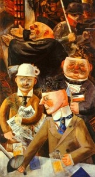

L'arte veniva controllata attentamente dal regime, dovente seguire la visione artistica di Hitler. Questo e portato, oltre all’utilizzo propagandistico, dal fatto che Hitler venne rifiutato ben due volte dall' accademia delle belle arti di Vienna, rendendolo un punto dolente per lui.
Per questo, quando sali al potere, decise di imporre la sua visione artistica su tutto il Reich. Questo porto a un ritorno alla pittura classica, specialmente inspirata all’arte greca e romana che, secondo il Führer, rifletteva l'ideale razziale Ariano, e ogni forma di arte moderna, avanguardismo o qualsiasi cosa che usciva dagli standard veniva rigettata e l'autore punito.
Hitler, infatti, sosteneva che l’arte modernista, ossia quella di avanguardia, corrompesse la società. Così chiunque sostenesse tale arte, nella fattispecie la frangia degli intellettuali ebrei, era all’origine del disfacimento della società. E da qui si evince con particolare chiarezza come anche l’arte fosse strumento per dare forza all’ideologia nazista. Per il Führer il modernismo era intollerabile in quanto provocatorio, enigmatico, cinico e scomodo: il fine dell’arte doveva essere una via di fuga dal dolore e non un confronto con esso. Il leader tedesco ha strenuamente tentato di instaurare un’arte di regime poiché era pienamente consapevole della portata dell’espressione artistica sulle masse, idea che trae ispirazione dal pensiero platonico, che teorizza che arte e società sono movimentate da forze simili e che la prima non solo riflette l’agitazione della seconda, ma la promuove.
Uno degli obiettivi principali di Hitler consisteva nell’ elevare la cultura tedesca a vertici di squisita eccellenza , per la cui realizzazione era necessario l’arte. Questo significava limitare drasticamente le influenze straniere, incentivando mostre di pittori e scultori tedeschi ed esibizioni di orchestre e compagnie tedesche all’estero affinché i grandi traguardi raggiunti dalla cultura ariana germanica fossero evidenti al consesso europeo e più generalmente a quello internazionale. L’arte divenne così un affare di stato.
Non stupisce che la pittura di genere rientrasse nei canoni accolti dal partito: il paesaggio , il contadino , il cacciatore, la madre ... un mondo di sostanze abitato da figure esemplari, nel tentativo di tornare ad essere la grandiosa e universalmente generalizzata espressione della nobile ed eroica volontà di tutto il popolo.
Venne riprodotto tutto ciò che rientrava nei parametri nazionalsocialisti di dignità della condizione umana con un sistema di allegorie che legava il paesaggio alla patria; il corpo umano e il nudo alla rappresentazione della vita e del vigore del buon sangue, acquisendo un valore non solo biologico, ma aprendosi a un segnale di rinascita individuale, di un intero popolo e del suo spirito.
Si potrebbe anche mettere qualcosa come che Hitler stesso creo la svastica che oggi conosciamo come emblema del nazismo.
Arte degenerata (entartete Kunst) è un termine che nel contesto della Germania del regime nazista indicava quelle forme d'arte che riflettevano valori o estetiche contrarie alle concezioni naziste, le quali si opponevano a molte forme di arte contemporanea, nell'intento di conservare i valori tipici della razza ariana e della sua tradizione culturale. Inoltre fu elaborata per umiliare i pittori ebrei e si svolsero sotto l’egida e la regia dell’indiscusso capo del ministero della propaganda.
Il concetto di degenerazione dell'arte non è una prerogativa nazista. Già Friedrich Schlegel lo utilizzava per etichettare l'involuzione poetica che a suo modo di vedere avrebbe avuto luogo nella tarda antichità. L'utilizzo tipicamente nazista del concetto si definisce per l'esplicita intenzione di collegare una presunta degenerazione a caratteristiche intrinseche delle razze umane meno sviluppate di quella ariana.
Nel 1937 le autorità naziste epurarono i musei dall'arte considerata "degenerata".La mostra fu inaugurata a Monaco di Baviera il 19 luglio 1937 , il giorno successivo all'inaugurazione della Grande mostra dell'arte tedesca e nelle immediate vicinanze.La mostra fu aperta da Joseph Goebbels: non era richiesto il pagamento di alcun biglietto di entrata, per far sì che fosse visitata dal maggior numero di persone possibile. Si spostò in 11 città della Germania e dell'Austria.
Fra i primi a ricorrere a questo tipo di ragionamento va annoverato Richard Wagner che nel 1850 pubblicava un'opera, Das Judenthum in der Musik , contenente un duro attacco nei confronti degli ebrei e del loro influsso sul panorama musicale.
DISCORSO
ALLA GIOVENTU' DI HITLER INTERPRETATO (NORIMBERGA 1934):
https://www.youtube.com/watch?v=GTgky3z4dH0
DISCORSO ORIGINALE:
https://www.youtube.com/watch?v=bWfr5i35YTg
ARTE DEGENERATA:
https://www.youtube.com/watch?v=SNEUm3r7OOU&feature=emb_title
AKTIONT4:
https://www.youtube.com/watch?v=5E0qCFor2UA&feature=emb_title
JOSEPH-GOEBBELS: http://www.ovovideo.com/joseph-goebbels/
NAZISMO: http://www.storiaxxisecolo.it/nazismo/index.html